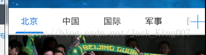

周末闲着没事，老师布置的作业都没完成，就简单去去实现下，还记得下午的写的联网的一个asnc——http框架的实现..........现在大多数APP，都在用大量的框架实现，不容置疑这样是提高了开发速度，但是新手 也会走上歪路，不断去用开源框架，其原理都不知道。 我们要做的就是下图：

小新我呢，写这篇文章的时候 2014.11.2.上图的效果 你用框架可以很简单的实现，Android-ViewPagerIndicator 我赶上了安卓的末班车，现在世界是浮躁的，做开发的有几个能静下心的写下博客呢，所以既然静下心了，那就好好的做点有意义的事吧。
雄起吧，骚年~~~~~
大家看到这个效果是不是觉得，卧槽，这么高级的东西，感觉很难搞啊，说实话我也做不出这么美观的东西，因为我没有美工...............
首先呢 这个布局 你可以看 首先相对布局， ------思考时间------------ 然后呢 右边应该是一个button组建 功能 滑动左边的标题------------思考时间---------------
能够滑动的东西 除了ScrollView 还有谁呢，正好里面有个 HorizontalScrollView 里面镶嵌一个线性布局 填充GridView
<RelativeLayout
android:id="@+id/categorybar_layout"
android:layout_width="match_parent"
android:layout_height="wrap_content"
android:layout_marginTop="-18.0dip"
android:background="@drawable/categorybar_background" >
<Button
android:id="@+id/category_arrow_right"
android:layout_width="6.0dip"
android:layout_height="10.0dip"
android:layout_alignParentRight="true"
android:layout_centerVertical="true"
android:layout_marginLeft="2.0dip"
android:layout_marginRight="10.0dip"
android:background="@drawable/categorybar_right_arrow" />
<HorizontalScrollView
android:id="@+id/category_scrollview"
android:layout_width="wrap_content"
android:layout_height="wrap_content"
android:layout_centerVertical="true"
android:layout_marginLeft="6.0dip"
android:layout_toLeftOf="@id/category_arrow_right"
android:scrollbars="none" >
<LinearLayout
android:id="@+id/category_layout"
android:layout_width="wrap_content"
android:orientation="horizontal"
android:layout_height="wrap_content"
android:gravity="center_vertical" />
</HorizontalScrollView>
</RelativeLayout>gridview 我将在main.java 里面填充
因为在代码里只能写PX，所以我用了一个工具类，将PX转换成dp 这也是为了适配考虑 在最后的时候 我会将代码贴出来的，不过代码有点乱，我分开 讲
在代码中 填充gridview
GridView category = new GridView(this); category.setColumnWidth(mColumnWidthDip);// 每個單元格的寬度 category.setNumColumns(GridView.AUTO_FIT);// 單元格數目 category.setGravity(Gravity.CENTER);// 設置對其方式 // 設置單元格選擇是背景色位透明，這樣選擇時就不實現黃色背景 category.setSelector(new ColorDrawable(Color.TRANSPARENT)); // 根據單元格寬度和數目計算總寬度 int width = mColumnWidthDip * categories.size(); System.out.println(width); LayoutParams params = new LayoutParams(width, LayoutParams.WRAP_CONTENT);
有了gridview 以后 要填充数据不是，对于标题，最好是从网络获取 然后填充，不过我先放在 res 文件中
String[] categoryArray = getResources().getStringArray(
R.array.categories);
gridview 我们是需要填充到 线性布局里面去的 gridview 又要填充 数据
我们先填充gridview的数据吧 不知道大家记不记得 gridview怎么填充数据 --------思考时间--------- 因为是数据是文字 所以 最简单的就是 SimpleAdapter
SimpleAdapter 第一参数是 填充的activity 第二个参数 是一个map集合也是我们要填充的数据 所以呢 只有将数据 用map集合装起来呗
// 獲得新聞分類
String[] categoryArray = getResources().getStringArray(
R.array.categories);
// 把新聞分類保存到List中
List<HashMap<String, String>> categories = new ArrayList<HashMap<String, String>>();
for (int i = 0; i < categoryArray.length; i++) {
HashMap<String, String> hashMap = new HashMap<String, String>();
hashMap.put("category_title", categoryArray[i]);
categories.add(hashMap);
}第三个参数是要填充的布局， 第四个是个数组，是从map集合中填充到 第五个界面的那个空间里面去
// 創建Adapter，指明映射字段
SimpleAdapter categoryAdapter = new SimpleAdapter(this, categories,
R.layout.category_title, new String[] { "category_title" },
new int[] { R.id.category_title });后面 就是将 实例化线性布局 将gridview 填充进来 最后还有一个 button的功能 添加点击事件，滑动标题
package com.example.SundayNews;
import java.util.ArrayList;
import java.util.HashMap;
import java.util.List;
import android.app.Activity;
import android.graphics.Color;
import android.graphics.drawable.ColorDrawable;
import android.os.Bundle;
import android.view.Gravity;
import android.view.Menu;
import android.view.View;
import android.view.View.OnClickListener;
import android.view.ViewGroup.LayoutParams;
import android.widget.Button;
import android.widget.GridView;
import android.widget.HorizontalScrollView;
import android.widget.LinearLayout;
import android.widget.SimpleAdapter;
import com.example.SundayNews.utils.DensityUtil;
public class MainActivity extends Activity {
private final int COLUMNWIDTHPX = 55;
private final int FLINGVELOCITYPX = 800;// 滚动距离
private int mColumnWidthDip;
private int mFlingVelocityDip;
@Override
public void onCreate(Bundle savedInstanceState) {
super.onCreate(savedInstanceState);
// requestWindowFeature(Window.FEATURE_NO_TITLE);
setContentView(R.layout.activity_main);
// 吧px转换成dip
mColumnWidthDip = DensityUtil.px2dip(this, COLUMNWIDTHPX) + 90;
mFlingVelocityDip = DensityUtil.px2dip(this, FLINGVELOCITYPX) + 90;
// 獲得新聞分類
String[] categoryArray = getResources().getStringArray(
R.array.categories);
// 把新聞分類保存到List中
List<HashMap<String, String>> categories = new ArrayList<HashMap<String, String>>();
for (int i = 0; i < categoryArray.length; i++) {
HashMap<String, String> hashMap = new HashMap<String, String>();
hashMap.put("category_title", categoryArray[i]);
categories.add(hashMap);
}
// 創建Adapter，指明映射字段
SimpleAdapter categoryAdapter = new SimpleAdapter(this, categories,
R.layout.category_title, new String[] { "category_title" },
new int[] { R.id.category_title });
GridView category = new GridView(this);
category.setColumnWidth(mColumnWidthDip);// 每個單元格的寬度
category.setNumColumns(GridView.AUTO_FIT);// 單元格數目
category.setGravity(Gravity.CENTER);// 設置對其方式
// 設置單元格選擇是背景色位透明，這樣選擇時就不實現黃色背景
category.setSelector(new ColorDrawable(Color.TRANSPARENT));
// 根據單元格寬度和數目計算總寬度
int width = mColumnWidthDip * categories.size();
System.out.println(width);
LayoutParams params = new LayoutParams(width, LayoutParams.WRAP_CONTENT);
// 更新category寬度和高度，這樣category在一行顯示
category.setLayoutParams(params);
// 設置適配器
category.setAdapter(categoryAdapter);
// 把category加入到容器中
LinearLayout categoryList = (LinearLayout) findViewById(R.id.category_layout);
categoryList.addView(category);
// 箭头
final HorizontalScrollView categoryScrollview = (HorizontalScrollView) findViewById(R.id.category_scrollview);
Button categoryArrowRight = (Button) findViewById(R.id.category_arrow_right);
categoryArrowRight.setOnClickListener(new OnClickListener() {
@Override
public void onClick(View v) {
categoryScrollview.fling(mFlingVelocityDip);
}
});
}
@Override
public boolean onCreateOptionsMenu(Menu menu) {
// Inflate the menu; this adds items to the action bar if it is present.
getMenuInflater().inflate(R.menu.main, menu);
return true;
}
}